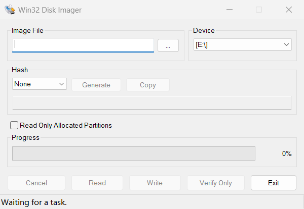

Read · Write · Verify
Block-by-block transfers in 1024-sector chunks, with a cancelable progress bar and the exact sector of the first mismatch.
Native Win32 · no Qt runtime · one executable
A from-scratch native Win32 rewrite of Win32DiskImager. Read, write and verify SD cards and USB drives with stock Windows controls — no Qt, no bundled runtime, no custom widgets.

Feature parity
The same workflow and safeguards as Win32DiskImager 1.0.0, rebuilt on the Win32 API.
Block-by-block transfers in 1024-sector chunks, with a cancelable progress bar and the exact sector of the first mismatch.
Hash the selected image with Windows CNG/BCrypt and copy the digest to the clipboard in one click.
Read just the defined partitions: parse the MBR and stop at the end of the last partition instead of copying the whole device.
Removable, USB, SD and MMC devices are enumerated at startup and refreshed through WM_DEVICECHANGE.
Drag an image onto the window, browse for it, or pass it on the command line. The last folder is remembered in the registry.
Every caption and message is a resource string. The UI follows the Windows language or an explicit --lang override.
Native by design
The entire interface is a single DIALOGEX resource. Every control is a stock
Win32 class — nothing is owner-drawn, themed by hand, or wrapped in a UI toolkit.
Win32DiskImager.rc; captions applied at runtime for i18n.An excerpt from Win32DiskImager.rc.
Build
All you need is a MinGW-w64 toolchain with g++ and windres. build.bat compiles the resources and links one executable.
build.bat. It compiles the resources and links Win32DiskImager.exe.Internationalization
Strings live in STRINGTABLE blocks in the resource script. The dialog is shared; captions are loaded with LoadStringW after SetThreadUILanguage.
Waiting for a task.
Write Successful.
Default on non-Chinese Windows.
等待任务。
写入成功。
Chinese Windows UI, or --lang zh-CN.